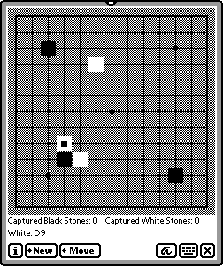

WaGo
|
|
WaGo is a Waba implementation of JaGo, the only open source Java
Go program I am aware of. As it stands, WaGo is the only Newton go-playing program. It's not all that good of a player, but
it puts up an interesting fight for me. WaGo is a hefty Java program,
taking up quite a bit of internal C++ heap. This means: don't open and close large windows (like the Extras drawer) while WaGo is running on an MP2000 or other heap-limited machine. If you do, you're likely to hang the Newton because it doesn't have enough memory to close the window.
WaGo demonstrates the usage of both Newton widgets (the New and Move menus) and Waba widgets (the Go board and labels underneath).
Status. WaGo is playable on an MP2K or MP2.1K. Some moves can take up to 15 seconds to think about. If you're doing close fighting, WaGo's moves are fast though (maybe 4 seconds). WaGo is too slow to reasonably play on an eMate or MP120/130. Try it and make up your own mind.
Download. WaGo in Stuffit format, including source code.
|  |
|
PacMan
|
|
PacMan is a Waba implementation of Java PacMan. I designed the new Monster's digs myself. :-) PacMan isn't presently very smart -- the monsters move at various speeds, but randomly. If someone would like to add a vector towards the PacMan for the monsters to generally move towards, it'd make the game much more challenging.
Status.Because the maze is too large, PacMan can only run on an MP2K or MP2.1K or an eMate. It runs quite nicely on the MP2K and MP2.1K. On an eMate it's a bit pokey, but it still runs. PacMan can use cursor keys or you can tap on the screen. Speed Note: If PacMan seems too slow, it may be because you've been running other Newton programs, or Waba programs, and various Newton memory leaks have gummed up the C++ heap. Try rebooting your Newton and running PacMan again.
Download. PacMan in Stuffit format, including source code.
| |
|
Asteroids
|
|
Asteroids is a Waba implementation of Asteroids. I turned off certain features to make the game faster: the star field, rotating asteroids, and complex asteroid polygons are turned off, but you can recompile with them turned on again. Like PacMan, this game really is too easy. We need to figure out how to make it more challenging.
Status. Asteroids runs on all Waba Newton platforms, including rotations of the MP2K and eMate screens. It's acceptable on the MP2K and MP2.1K, annoyingly slow on the eMate, and absurdly slow on the MP120 or MP130. Speed Note: Like PacMan (see above), Asteroids will run faster if your C++ heap hasn't been leaking. Try rebooting the Newton, you'll often get faster response.
Download. Asteroids in Stuffit format, including source code.
| |
|
SameGame
|
|
SameGame is a Waba implementation of The Same Game puzzle. You click on groups of similar tiles to delete them. Deleting tiles collapses columns down; when a whole column is gone, columns to the right shift over. Ultimately, you want to delete every tile in the screen. There are three levels available. Like WaGo, SameGame also sports a Newton menu and other internals that are Newton-specific.
Status. SameGame works great on every Waba for Newton implementation, and in every available rotation (MP120/MP130 rotations are not presently supported). If you you turn on buffering, SameGame will be more responsive to menus and overlapping windows disappearing, but won't be as fast in redrawing tiles when you click on them. Try it and see which you prefer.
Version 0.91b Changes: Java array bug fixed which was causing problems for Portrait mode. Also, bitmaps in the source suffered from GraphicConverterInvertBug-itis, resulting in an inverted appearance when compiled into the game.
Download. SameGame in Stuffit format, including source code.
| |
|
Slide
|
|
Slide is a Waba implementation of The Sliding Piece Puzzle applet and games by Hirofumi Fujiwara. The objective is to slide the tiles around until the large square tile (marked "a") touches the edge of the box at the location marked with the thick line. Included are a large number of puzzles designed by Fujiwara and others, all marked with the minimum number of moves known in order to complete the puzzle. If you beat the minimum, Fujiwara-san would like to speak with you.
Status. Slide works on every Waba for Newton implementation, and in every a
vailable rotation (MP120/MP130 rotations are not presently supported). However, it's pretty slow on MP120s/130s, though still playable. It's a little prettier on MP2Ks and eMates when grayscale is turned on, though that also comes at a speed hit.
Download. Slide in Stuffit format, including source code.
| |
|